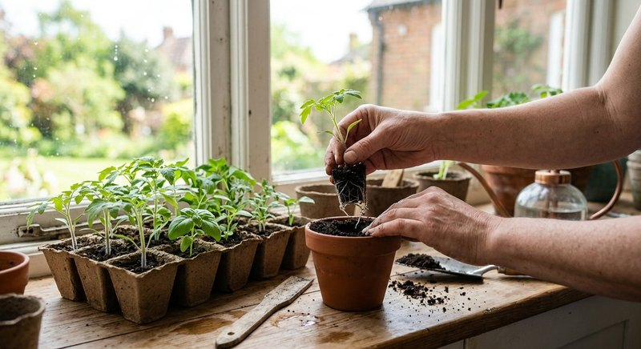

Рассада · 5 мин чтения
Подкормка рассады томатов дома: сроки, дозировка и частые ошибки
Рассада томатов быстро реагирует на свет и объём стаканчика, поэтому бледные или вытянутые сеянцы нельзя автоматически лечить удобрением. Питание начинают по этапу развития, запасу в грунте и инструкции средства.
Материал обновлён 24.10.2026 · Справочная информация, не заменяет инструкцию на упаковке.

Этапы рассады томата: от семядолей до пикировки
Сразу после всходов томат живёт за счёт семени и первых семядолей, а настоящая потребность в внешнем питании появляется позже и зависит от субстрата. Если смесь для рассады уже заправлена удобрением, дополнительная подкормка в первые дни может оказаться лишней. До появления настоящих листьев важнее сильный свет, умеренная температура после всходов и ровная влажность без болота.
К моменту пикировки оценивают не только число листьев, но и корни, толщину стебля и скорость просыхания стаканчика. Пересадка в свежий субстрат сама меняет запас питания. Поэтому сроки из чужих календарей нельзя переносить без учёта грунта. Общая логика этапов собрана в статьях о первой подкормке рассады и о питании после пикировки.
Свет и температура определяют крепость стебля
Томаты особенно заметно тянутся при слабом и далёком источнике света. Подоконник может выглядеть светлым для человека, но сеянцам часто нужна досветка на расстоянии, рекомендованном производителем лампы. После всходов лишнее тепло при недостатке света усиливает мягкий рост. Если стебли уже длинные и тонкие, сначала исправляют свет и условия по материалу рассада вытянулась: что делать.
Поливайте так, чтобы субстрат увлажнялся по объёму, а затем лишняя вода уходила. Постоянно мокрый стаканчик у холодного стекла тормозит корни, и листья могут бледнеть даже при наличии питания. Расставляйте ёмкости свободнее по мере роста: соседние листья не должны полностью закрывать друг друга.
- после всходов свет включён близко и на достаточную длительность;
- есть настоящие листья, а не только семядоли;
- известно, заправлен ли субстрат стартовым питанием;
- стаканчик не стоит в воде и не переохлаждается;
- после пикировки растение возобновило рост.
Когда и как вносить удобрение томатам
Первую плановую подкормку определяют инструкция удобрения для рассады и состав грунта. Не используйте норму взрослого комнатного цветка как универсальную для сеянцев. Раствор готовьте на измеренный объём воды и вносите по влажному субстрату, если так указано производителем. Точный расчёт помогает выполнить руководство как развести жидкое удобрение.
Семяздрав заявлен продавцом для рассады; для томатов сверяйте актуальную этикетку и норму именно для сеянцев. Не добавляйте одновременно золу, дрожжевые настои и второй комплекс: суммарная концентрация станет неизвестной. Если после подкормки края листьев сохнут, следующую дозу не повторяют и проверяют состояние корней.
Пикировка и посадка вытянувшихся томатов
Томат способен образовывать дополнительные корни на заглублённой части стебля, поэтому при пересадке вытянувшийся сеянец иногда сажают глубже с учётом состояния и размера ёмкости. Это особенность томата, а не универсальный совет для перца и цветов. Перед заглублением убедитесь, что стебель здоров, а субстрат не будет постоянно мокрым. Сразу после пикировки растению нужны свет без ожога и время на укоренение.
Не пытайтесь исправить вытянутость увеличенной дозой: уже сформированные междоузлия не станут короче. Оценивайте новый прирост при исправленном свете. Если рассада переросла стаканчик, своевременная перевалка в больший объём может быть важнее очередной подкормки.
Перед высадкой: закаливание и контроль перекорма
За несколько дней до переезда рассаду постепенно приучают к солнцу и движению воздуха. В этот период не начинают новую незнакомую схему питания. Тёмно-зелёные мягкие листья при слабом стебле, сухие края и налёт на субстрате — повод пересмотреть суммарное количество удобрений. Записывайте дату пикировки, состав грунта и каждое внесение по сортам.
Здоровая рассада томата оценивается комплексно: компактный прирост при достаточном свете, упругие листья, корни без запаха и субстрат, который просыхает предсказуемо. Подкормка поддерживает эту систему, но не заменяет досветку, объём стаканчика и закаливание.
По мере роста расставляйте стаканчики свободнее и поднимайте лампу так, чтобы расстояние до верхушек оставалось в пределах инструкции, но листья соседних растений не смыкались в сплошной ковёр. Если один сорт заметно опережает другие, не выравнивайте его дополнительной подкормкой слабых соседей: у сортов разный темп, а стаканчики могут находиться в неодинаковом свете. Перестановка местами и одинаковый полив по фактической влажности дают более честное сравнение.
Частые вопросы
Когда первый раз подкармливать рассаду томатов?
После развития настоящих листьев и с учётом стартового питания грунта, строго по инструкции для рассады. Единого дня после всходов для всех субстратов нет.
Можно ли подкормить томаты в день пикировки?
Не автоматически. Новый грунт может содержать питание, а корням нужно восстановление. Сначала дождитесь укоренения и сверьтесь с этикетками грунта и удобрения.
Почему рассада томатов бледная?
Возможны недостаток света, холод, мокрый субстрат, маленький объём и только затем нехватка питания. Проверьте условия до увеличения дозы.
Можно ли заглублять вытянувшийся томат при пикировке?
Томат способен давать корни на стебле, поэтому умеренное заглубление здорового сеянца допустимо. Не переносите этот приём автоматически на перец и другие культуры.